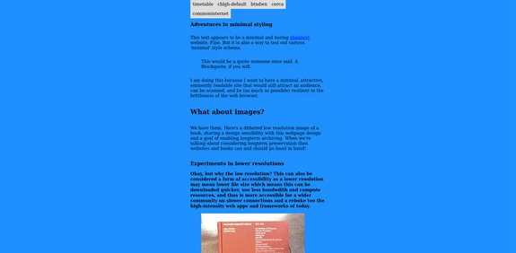

Lee Tusman
↩ Everyday
<
>
Title: minsite
Year: 2023
Medium: Website
URL: /minsite
Descrip: Style tester for various minimal website schema, and to inform the redesign of the main leetusman.com website. Minsite uses stylesheets re-used and adapted from cblgh (including his Cerca forum software styles), XXIIVV, Max's Common Internet Interviews, a clone of buttondown, and my own styles.

 ©opyleft
©opyleft